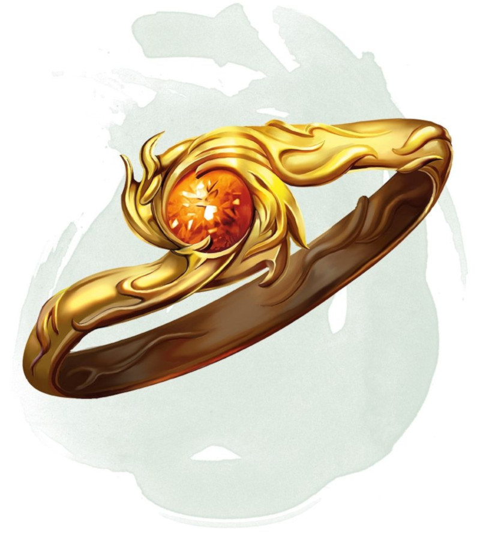

Anneau de résistance
Anneau, rare (nécessite un lien)
Vous obtenez la résistance à un type de dégâts tant que vous portez cet anneau. La gemme sur l'anneau indique le type, lequel est choisi par le MD ou déterminé au hasard.
| d10 | Type de dégâts | Gemme |
|---|---|---|
| 1 | Acide | Perle |
| 2 | Froid | Tourmaline |
| 3 | Feu | Grenat |
| 4 | Force | Saphir |
| 5 | Foudre | Citrine |
| 6 | Nécrotique | Jais |
| 7 | Poison | Améthyste |
| 8 | Psychique | Jade |
| 9 | Radiant | Topaze |
| 10 | Tonnerre | Spinelle |
Dungeon Master´s Guide (SRD)
